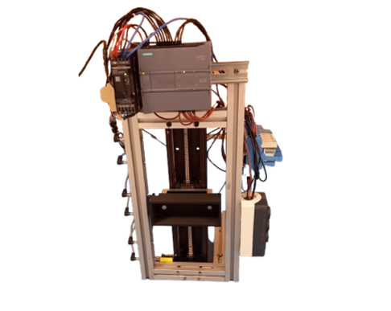
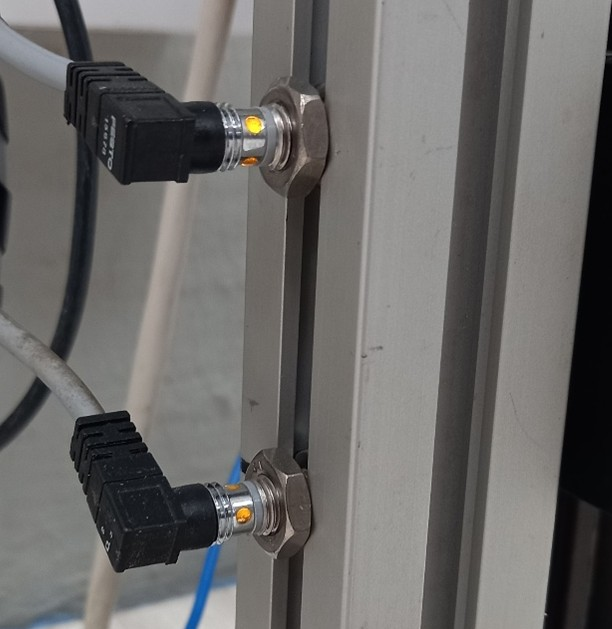

1. Arduradunaren datuak 1. Datos del responsable 1. Responsible person data
Izena: Xabier Uzin
Kontaktua: xuzin@izarraitz.eus
Laborategia: K1.7
Nombre: Xabier Uzin
Contacto: xuzin@izarraitz.eus
Laboratorio: K1.7
Name: Xabier Uzin
Contact: xuzin@izarraitz.eus
Laboratory: K1.7
2. Deskribapena eta Laburpena 2. Descripción y Resumen 2. Description and Summary
Maketa honen helburua 3 pisuko igogailu baten programazioa egitea da. Igogailua motor elektriko baten bidez mugitzen da gorantz eta beherantz. Mugimendua 2 abiadura ezberdinetan egin daiteke, bai gorantz eta bai beherantz. Helburua, abiarazte eta gelditze gozoak egitea da, geldik egotetik abiadura makalera pasatuz eta jarraian abiadura azkarrera. Gelditzean alderantziz egingo da, abiadura azkarretik makalera eta ondoren geldituko da. Honen helburua, ikasleek izar-triangelu abiaraztea ikasten dutenean, antzeko prozesu bat automata bidez egitea da, lehendabizi motorra abiadura makalean jarri eta ondoren azkarrera pasatuz.

El objetivo de esta maqueta es realizar la programación de un ascensor de 3 pisos. El ascensor se mueve hacia arriba y hacia abajo mediante un motor eléctrico. El movimiento se puede realizar a 2 velocidades diferentes, tanto hacia arriba como hacia abajo. El objetivo es realizar arranques y paradas suaves, pasando del estado de reposo a la velocidad lenta y, a continuación, a la velocidad rápida. Al parar se hará a la inversa: de la velocidad rápida a la lenta, y después se detendrá. El objetivo de esto es que, cuando los alumnos aprendan el arranque estrella-triángulo, realicen un proceso similar mediante un autómata, poniendo primero el motor en velocidad lenta y pasando después a la rápida.
The objective of this model is to program a 3-floor elevator. The elevator moves upwards and downwards by means of an electric motor. The movement can be performed at 2 different speeds, both upwards and downwards. The goal is to achieve smooth starts and stops, transitioning from a standstill to slow speed and then to fast speed. When stopping, the process is reversed: from fast speed to slow speed, and then it stops. The purpose of this is that, when students learn about star-delta starting, they perform a similar process using a PLC, first setting the motor to slow speed and then switching to fast speed.
3. Helburuak 3. Objetivos 3. Objectives
Tutorial honen amaieran, ikaslea gai izango dira igogailuren inguruan egindako lanari esker honakoa egiteko:
1. Industria-sistemetako erregulazio-lotura osatzen duten elementuak identifikatu.
2. PLCa kontrol sekuentzialeko sistema mekatronikoen muntaian integratu, eta hau konektatu, programatu, egiaztatu eta funtzionamenduan mantendu.
3. PLC bidez kontrolatutako prozesu diskretuetako eta jarraituetako sistema mekatronikoen muntaian industria-komunikazioak integratu horien funtzionamendua egiaztatu.
4. Produkzioko sistema mekatroniko diskretuak eta jarraituak abian jarri, eta, horretarako, teknologiak integratu, zikloak optimizatu nicotine eta funtzionamendu baldintzak bete.
5. Sistema mekatroniko diskretu eta jarraitu simulatuetan matxurak diagnostikatu eta ebatzi.
Al final de este tutorial, y gracias al trabajo realizado con el ascensor, el alumno va a ser capaz de:
1. Identificar los elementos que componen el lazo de regulación en sistemas industriales.
2. Integrar el PLC en el montaje de sistemas mecatrónicos de control secuencial, y conectar, programar, verificar y mantener en funcionamiento el mismo.
3. Integrar las comunicaciones industriales en el montaje de sistemas mecatrónicos de procesos discretos y continuos controlados por PLC, verificando su funcionamiento.
4. Poner en marcha sistemas mecatrónicos de producción discretos y continuos, integrando tecnologías, optimizando ciclos y cumpliendo las condiciones de funcionamiento.
5. Diagnosticar y resolver averías en sistemas mecatrónicos discretos y continuos simulados.
At the end of this tutorial, and thanks to the work carried out with the elevator, the student will be able to:
1. Identify the components that make up the regulation loop in industrial systems.
2. Integrate the PLC into the assembly of sequential control mechatronic systems, as well as connect, program, verify, and maintain its operation.
3. Integrate industrial communications into the assembly of discrete and continuous process mechatronic systems controlled by PLC, verifying their operation.
4. Commission discrete and continuous production mechatronic systems by integrating technologies, optimizing cycles, and meeting operating conditions.
5. Diagnose and resolve faults in simulated discrete and continuous mechatronic systems.
4. Maketa kontrolatzeko jarraibideak eta eskema elektrikoa 4. Instrucciones para controlar la maqueta y esquema eléctrico 4. Instructions for controlling the model and electrical diagram
Maketa hau Izarraitz Lanbide Heziketa LHII ikastetxean dago, bideo honetan maketara nola konektatu azaltzen da.
Esta maqueta está en el centro Izarraitz Lanbide Heziketa LHII, en este vídeo se explica cómo conectarse a la maqueta.
This scale model is located at the Izarraitz Lanbide Heziketa LHII center; this video explains how to connect to the model.
5. Ezaugarriak eta aldagaiak 5. Características y variables 5. Features and variables
PLC sarrerak (Tag-en zerrenda):
Entradas del PLC (Lista de Tags):
PLC Inputs (Tag List):
| Tag Izena / DeskribapenaNombre Tag / DescripciónTag Name / Description | HelbideaDirecciónAddress | Funtzioa / OharrakFunción / NotasFunction / Notes |
|---|---|---|
| 1SB | I0.0 | 1 solairuko beheko sentsoreaSensor inferior de la planta 1Floor 1 bottom sensor |
| 1SG | I0.1 | 1 solairuko goiko sentsoreaSensor superior de la planta 1Floor 1 top sensor |
| 2SB | I0.2 | 2 solairuko beheko sentsoreaSensor inferior de la planta 2Floor 2 bottom sensor |
| 2SG | I0.3 | 2 solairuko goiko sentsoreaSensor superior de la planta 2Floor 2 top sensor |
| 3SB | I0.4 | 3 solairuko beheko sentsoreaSensor inferior de la planta 3Floor 3 bottom sensor |
| 3SG | I0.5 | 3 solairuko goiko sentsoreaSensor superior de la planta 3Floor 3 top sensor |
PLC irteerak (Tag-en zerrenda):
Salidas del PLC (Lista de Tags):
PLC Outputs (Tag List):
| Tag Izena / DeskribapenaNombre Tag / DescripciónTag Name / Description | HelbideaDirecciónAddress | Funtzioa / OharrakFunción / NotasFunction / Notes |
|---|---|---|
| K1 | Q0.0 | Azkar gorantzRápido hacia arribaFast upwards |
| K2 | Q0.1 | Azkar beheraRápido hacia abajoFast downwards |
| K3 | Q0.2 | Makal gorantzDespacio hacia arribaSlow upwards |
| K4 | Q0.3 | Makal beherantzDespacio hacia abajoSlow downwards |
6. Maketaren funtzionamendueren inguruko jarraibideak 6. Instrucciones sobre el funcionamiento de la maqueta 6. Instructions on the operation of the model
Sentsoreak
Maketan dauden 6 sentsoreak kapazitiboak dira. Solairu bakoitzean 2 sentsore daude, bat goian eta bestea behean. Sentsore hauen aktibazioa igogailuaren goiko muturrak eta beheko muturrak egiten dute, beraz, igogailua solairuan egoki dago bi sentsoreak batera aktibatuta daudenean.

Aktuatzaileak
Gorantz bi abiadura daude eta beherantz beste bi. Goranzko edo beheranzko bi abiadurak batera jarri ezkero martxan abiadura azkarra nagusitzen da. Gorantzko edo beherantzko agiduak aldi berean eman ezkero ez da zirkuitulaburrik sortuko, lehendabizi aktibatzen denak ez bait dio besteari aktibatzen utziko. (Egiaztatu eskema elektrikoan)
Sensores
Los 6 sensores que hay en la maqueta son capacitivos. En cada planta hay 2 sensores, uno arriba y otro abajo. La activación de estos sensores la realizan el extremo superior y el extremo inferior del ascensor, por lo tanto, el ascensor está correctamente en la planta cuando ambos sensores están activados a la vez.
Actuadores
Hacia arriba hay dos velocidades y hacia abajo otras dos. Si se ponen en marcha a la vez las dos velocidades de subida o de bajada, predomina la velocidad rápida. Si se dan las órdenes de subida o de bajada al mismo tiempo no se producirá ningún cortocircuito, ya que la que se active primero no dejará que la otra se active. (Comprobar el esquema eléctrico)
Sensors
The 6 sensors on the scale model are capacitive. There are 2 sensors on each floor, one at the top and one at the bottom. These sensors are triggered by the upper and lower edges of the elevator, meaning that the elevator is correctly aligned with the floor when both sensors are activated simultaneously.
Actuators
There are two speeds upwards and two speeds downwards. If both speeds for upwards or downwards movement are activated at the same time, the fast speed takes precedence. If both upward and downward commands are given simultaneously, no short circuit will occur, as the one activated first will block the other from activating. (Verify in the electrical diagram)
7. Praktika 1 7. Práctica 1 7. Practice 1
7.1. Proiektuaren sorrera eta 1etik 2rako mugimendua 7.1. Crear proyecto y movimiento de planta 1 a 2 7.1. Project creation and movement from floor 1 to 2
Igogailua martxan jartzeko egingo den lehen ekintza igogailua lehenengo solairutik bigarrengora mugitzea izango da. Honetarako, grafcet txiki hau programatu beharko da. Honela, igogailua abiadura makalean abiatuko da eta 3 segunduren ondoren azkarrera pasako da. Gelditzea egiteko ere abiadura makarela pasako da, 2 solairuko beheko sentsorea aktibatzen den momentuan. 2.solairuko bi sentsoreak aktibatzen direnean geldituko da.
La primera acción que se realizará para poner en marcha el ascensor será moverlo desde la primera planta hasta la segunda. Para ello, se deberá programar este pequeño grafcet. De este modo, el ascensor arrancará a velocidad lenta y, tras 3 segundos, pasará a velocidad rápida. Para realizar la parada también pasará a velocidad lenta en el momento en que se active el sensor inferior de la 2ª planta. Se detendrá cuando se activen ambos sensores de la 2ª planta.
The first action to start up the elevator will be to move it from the first floor to the second. To do this, this small Grafcet must be programmed. In this way, the elevator will start at slow speed and, after 3 seconds, switch to fast speed. To stop, it will also switch back to slow speed when the bottom sensor of the 2nd floor is activated. It will come to a complete stop when both sensors of the 2nd floor are activated.


7.2. 2 solairuko igogailua 7.2. Ascensor de 2 plantas 7.2. 2-floor elevator
Lehenengo praktika honen bigarren zatian aurreko programa osatuko dugu igogailuak gora eta behera egiteko. Horretarako, honako grafcet hau programatuko dugu.
Lehengo programari adar bat gehitzea denez, aurreko programan bertan egin daiteke jarraipena. 4, 5 eta 6 etapen aktibazio eta desaktibazioak gehitu behar ditugu, eta ekintzetan etapa bakoitzak egiten duena jarri.
En la segunda parte de esta primera práctica completaremos el programa anterior para que el ascensor suba y baje. Para ello, programaremos el siguiente grafcet. Al tratarse de añadir otra rama al programa anterior, se puede continuar directamente en el mismo proyecto. Debemos añadir la activación y desactivación de las etapas 4, 5 y 6, y colocar en las acciones lo que realiza cada etapa.
In the second part of this first practice, we will complete the previous program so that the elevator can move both up and down. To do this, we will program the following Grafcet. Since this involves adding another branch to the previous program, you can continue directly within the same project. We must add the activation and deactivation conditions for steps 4, 5, and 6, and map out what each step does in the actions FC.

7.3. 3 solairuko igogailua. 7.3. Ascensor de 3 plantas 7.3. 3-floor elevator
Praktika hau amaitzeko, igogailua 3 pisukoa izatera pasako da, baina lan egiteko era berdina izango da. 3 pisu ditugunez, 6 aukera posible izango ditugu. Honako mugimendu hauek izan ditzakegu:
1 → 2, 2 → 1, 1 → 3, 3 → 1, 2 → 3, 3 → 2
Ondorioz, honako grafcet hau izango dugu, eta aurreko bi praktiketako programarekin jarraituz, osatu etapa guztien aktibazio eta deskatibazioak eta ekintzak.
Para finalizar esta práctica, el ascensor pasará a ser de 3 pisos, pero la forma de trabajar será la misma. Como tenemos 3 pisos, tendremos 6 opciones posibles. Podemos tener los siguientes movimientos:
1 → 2, 2 → 1, 1 → 3, 3 → 1, 2 → 3, 3 → 2
En consecuencia, tendremos el siguiente grafcet y, continuando con el programa de las dos prácticas anteriores, completa las activaciones, desactivaciones y acciones de todas las etapas.
To conclude this practice, the elevator will expand to 3 floors, but the operational logic remains the same. Having 3 floors gives us 6 possible combinations of movement:
1 → 2, 2 → 1, 1 → 3, 3 → 1, 2 → 3, 3 → 2
Consequently, we will use the following Grafcet; continuing from the previous two setups, complete the activations, deactivations, and actions for all steps.

1 praktikaren egiaztapena Prueba de la primera práctica Verification of practice 1
Praktikaren programa guztia eginda duzunean konektatu PLC-ra, kargatu programa eta egiaztatu funtzionamendua.
Beheko bideo honetan duzu egiaztatzeko tutoriala:
Una vez que tengas hecho todo el programa de la práctica, conéctate al PLC, carga el programa y verifica su funcionamiento.
En el siguiente vídeo tienes el tutorial para la verificación:
Once you have built the entire program, connect to the PLC, download the program, and verify its operation.
The verification tutorial video is available below:
8. Praktika 2 8. Práctica 2 8. Practice 2
Lehen praktikan igogailua helburuko pisura mugitzen zen, baina mugimenduan zehar beste pisu baterako deia egin ezkero ez luke agindua beteko. Bigarren praktika honen helburua igogailua mugitzen den bitartean beste pisu batera joateko deia jaso ezkero, bidean badago gelditzea izango da, edo helburuko pisura iritsi eta berriro botoiari eman gabe harantz mugitzea.
Gauzak errazteko, abairaztean abaidura makalean hasiko da eta 3s beranduago azkarrera pasa, gelditzean ordea, azkarretik gelditzera pasako da zuzenean.
Honetarako, lan egiteko modua aldatuko da eta kontrola grafcet bidez egin ordez, logika bidez egitera pasako gara.
En la primera práctica el ascensor se movía al piso de destino, pero si durante el movimiento se realizaba una llamada para otro piso, no cumpliría la orden. El objetivo de esta segunda práctica será que, si se recibe una llamada para ir a otro piso mientras el ascensor se está moviendo, este se detenga si está en camino, o bien se mueva hacia allí tras llegar al piso de destino sin necesidad de pulsar de nuevo el botón.
Para simplificar las cosas, al arrancar comenzará a velocidad lenta y 3 segundos más tarde pasará a velocidad rápida; sin embargo, al detenerse, pasará directamente de velocidad rápida a pararse.
Para ello, la metodología cambiará y en lugar de controlar mediante Grafcet, pasaremos a programar mediante lógica booleana convencional.
In the first practice, the elevator moved directly to the destination floor, but if a call was made to another floor during movement, it ignored the command. The goal of this second practice is to allow the system to register calls on the fly: if a call is made to a middle floor while moving past, it should stop, or proceed to that destination after completing its current task without pressing the button again.
To simplify things, upon starting, it will launch in slow speed and shift to fast speed 3s later; however, when stopping, it will go from fast speed directly to a full halt.
To achieve this, the working methodology changes: instead of sequencing with Grafcet, we will implement the control using standard combinational/interlock logic.


9. Lanen entrega 9. Entrega de trabajos 9. Submission of work
Lana amaitutzat emateko egindakoa entregatu behar duzu. Zure irakasleak esandako lekuan, moodle, drive... Tia Portaleko proiektua eta igogailuaren funtzionamendu bideao entregatu beharko dituzu.
Kontuan izan Proiektua lainoan dagoen ordenagailuan dagoela, eta ordenagailua hau egakorra dela, beraz, proeiktua amaituta izan edo ez, gorde zeure ordenagailuan, drive-en edo pendrive batean.
Para dar el trabajo por finalizado debes entregar lo realizado. En el lugar indicado por tu profesor/a (Moodle, Drive...), deberás entregar el proyecto de TIA Portal y el vídeo del funcionamiento del ascensor.
Ten en cuenta que el proyecto se encuentra en el ordenador de la nube y que este ordenador es volátil, por lo tanto, esté o no terminado el proyecto, guárdalo en tu propio ordenador, en Drive o en un pendrive.
To mark the assignment as finished, you must submit your work. At the platform chosen by your instructor (Moodle, Drive...), you will need to upload the TIA Portal project file and a recorded clip of the operating elevator.
Beware that your current file workspace sits on a cloud virtual environment which is volatile; whether your project is fully finalized or ongoing, export and back it up on your local drive, cloud storage, or a physical USB drive.
Tia portal-eko proiektua Proyecto de TIA Portal TIA Portal project file
Entrega moduan Tia Portal-eko proiektua eta funtzionamendu bideoa entragatu behar dituzu.
Como entrega debes entregar el proyecto de TIA Portal y el vídeo de funcionamiento.
For the submission, you must provide both the TIA Portal compressed directory and the runtime capture video.


Funtzionamendu bideoa Vídeo en funcionamiento Operation video clip
Funtzionamendu bideo grabatzeko modu egokiena zure ordenagailuko ¨herramienta de recortes¨ erabiltzea da.

Beste aukera zure mugikorrarekin pantaila grabatzea da.
La mejor manera de grabar el vídeo de funcionamiento es utilizar la "Herramienta de recortes" de tu ordenador.
Otra opción es grabar la pantalla con tu móvil.
The cleanest approach to record your physical/simulated screen operation is deploying the native OS "Snipping Tool" screen recorder.
Alternatively, you can record the monitor directly using your smartphone camera.